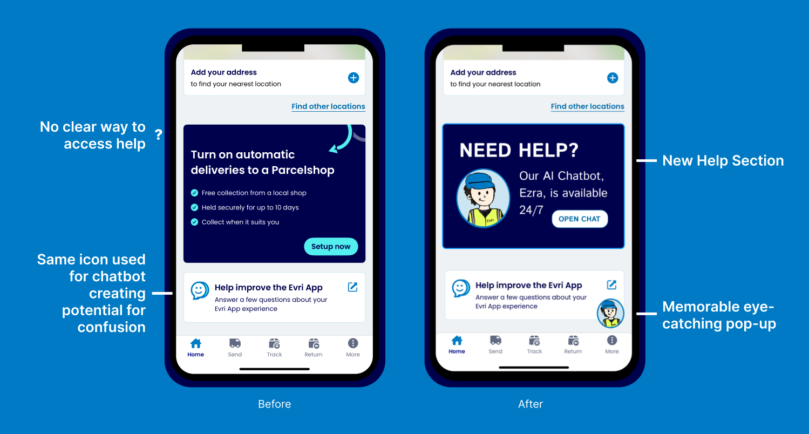
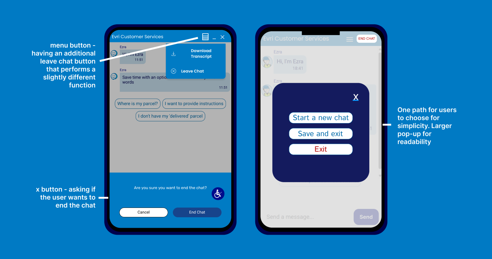
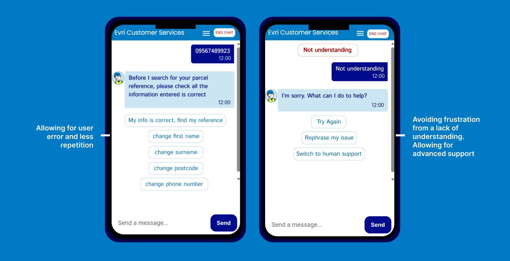

EVRI AI Chatbot Usability Study
Utilising usability testing and qualitative feedback, I explored how users interacted with the chatbot to
create targeted design changes to improve the support experience.
Overview
This project evaluated the usability of EVRI's customer service chatbot to identify key user frustrations
and produce design improvements with an aim to increase trust, efficiency and emotional engagement.
Aim: Improve EVRI's Customer Service Chatbot
Role: UX Researcher and Designer
Problem
Customer reviews and industry reports highlight frequent user frustration with EVRI’s customer support.
Many customers rely on the chatbot service for issues with deliveries, but a lack of understanding was
leading to hightened frustration and revealed low usability and task completion.
Support tools and general customer service are often used during times of heightened
stress for customers (e.g when parcels have been misdelivered), system limitations can
then lead to a significant increase in user frustration, emphasising the importace of
chatbot usability
Solution
I performed a usability study to see what areas were causing confusion or frustration. Based on these findings I proposed a redesign for the chatbot identity and the chatbot's conversation structure to allow for user error. The suggested improvements focus on increasing chatbot transparency, task completion, and creating a more approachable service.
Usability Testing
A Usability study was conducted with participants who were aged 18-40 and who regularly shopped online. Each participant completed the same three tasks:
- Navigate from the homepage to the chatbot and track a parcel
- Open a new chat discussing a missing parcel
- Ask the chatbot for collection advice
The participants were encouraged to 'Think Aloud' while completing the tasks to reveal further usability issues.
The chatbot was further evaluated using the BUS-15 Chatbot Usability Scale
Overall Usability Score: 2.5/5
Key Insights
Testing revealed three major issues:
- Poor Chatbot discoverability
100% of participants, new to the EVRI app, struggled to find the chatbot from the app homepage.
This suggests the chatbot discoverability is low and may not align with users' expectations.
- Negative User Experience
100% of participants were either confused or frustrated starting a new chat.
This seemed to be as a result of there being multiple ways to perform similar tasks that had different outcomes.
- Lack of understanding
The chatbot frequently struggled to interpret slight differences in prompts and commonly misinterpreted
or ignored user queries as a result. Although the responses were clear and timely there is a lack of understanding for vague or complex prompts.
Feedback from participants:
“When asked the question the chatbot response seemed like there was no understanding.”
“I feel the chat was very inefficient when it came to new prompts and seemed to only work when the options were clicked and
the text entered had no errors"
1 - Increasing Discoverability
To improve discoverability, a clearer entry poster was introduced to the homepage, in addition to the redesigned chatbot pop-up.
This allows users to quickly access support when necessary.

2 - UX Writing
Improving clarity of 'End chat' button
To avoid user error and confusion I created one path for users to end/create new chat.

Implementing error handling
The chatbot failed to understand any user input error or interpret complex prompts.
This led to a feeling of one-sided conversation that was fixed by allowing users to
alter entries and let the chatbot know if it wasn't helping to solve the original problem.

Humanised chatbot
To address the lack of emotional engagement creating a disconnect between users and service, I designed a new visual identity
for the chatbot. Giving Ezra, the chatbot name, a distinguishable character helps to create a more humanised interaction and
can encourage users to feel more at ease when interacting with automated support. This is increasingly important with the rise
of AI and hesitant AI acceptance